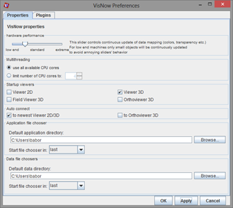
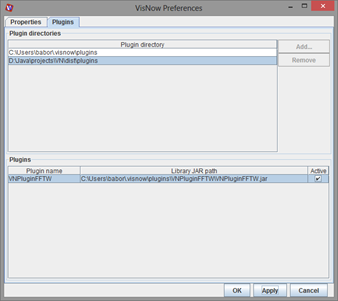

PREFERENCES
Preferences Window consists of Properties Tab, and Plugins Tab. All changes are applied after clicking “Apply” button or “OK” button. “Cancel” button discards changes.

Properties Tab allows user to set some global properties of VisNow:
- Hardware perfomance - user can set how powerful is the computer VisNow is running on. By draging this slider to the leftmost position low end computer is selected, by dragging the slider to the rightmost position extreme performance computer is selected. Setting of this property controls continuous refreshing of some data mapping behaviour (e.g. color, transparency) in presentation panel. The refreshing depends on object size and this setting. The better the machine and the smaller the object, the more continous the refresh is.
- Multithreading - user can limit the number of computing threads available to VisNow modules. If a module is multithreaded it uses this number of threads to compute.
- Action on exceptional float/double values - user can decide how VisNow supports NaN and Infinity values in floating point decimals.
- set 0 - replaces NaNs and Infinities with 0 value
- set data min/max - replaces NaNs and Infinities with min or max value from current data component
- set number min/max - replaces NaNs and Infinities with +/- large number
- throw exception - causes to show error on such numbers (for debugging purposes)
- Startup viewers - user can select which viewer modules are automatically created in new workspace. By default this is set to Viewer3D only.
- Auto connect - user can select if a newly created module with geometry output automatically connects to the newest viewer module.
- Default application directory - sets the default directory where VisNow looks for applications if no last directory is present. It is used by File->Load network file chooser.
- Default data directory - sets the default directory where VisNow looks for data if no last directory is present. It is used by all reader module file choosers.

Plugins tab is the place to configure VisNow plugins with external module libraries.
The upper panel shows the list of directories where VisNow is lookong for plugins. By default these are plugin directories in VisNow installation directory and default VisNow properties directory. User can add or remove additional directories. A directory must contain subdirectories representing plugins (each subdirectory is scanned for the presence of JAR file with external VisNow library).
In the lower panel a list of available plugins from the above directories is shown. Each plugin is described by its name and path to the JAR file with the plugin. By selecting a checkbox on the right hand side of the plugin user can turn on or off each plugin. If a plugin is activated it appears in the library panel in VisNow application. The list of active plugins is persistent.
To install a new plugin the following steps are required:
- put the plugin folder (with plugin JAR file and libraries) in one of the default directories
or
add a new directory with plugin subdirectories - activate the selected plugin by checking a checkbox on the plugins list
- click “Apply” or “OK”